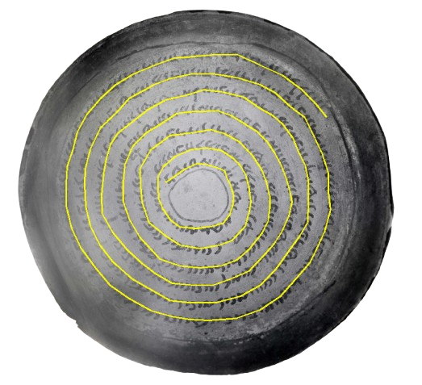
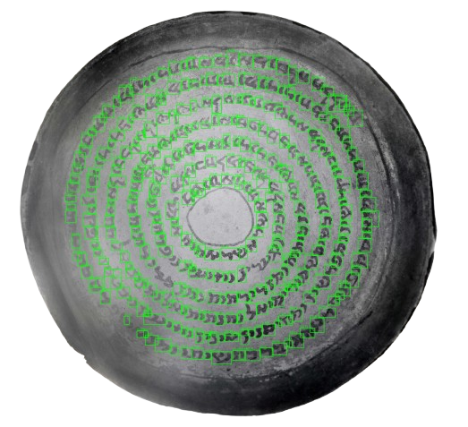
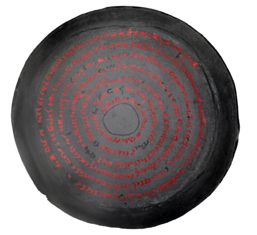
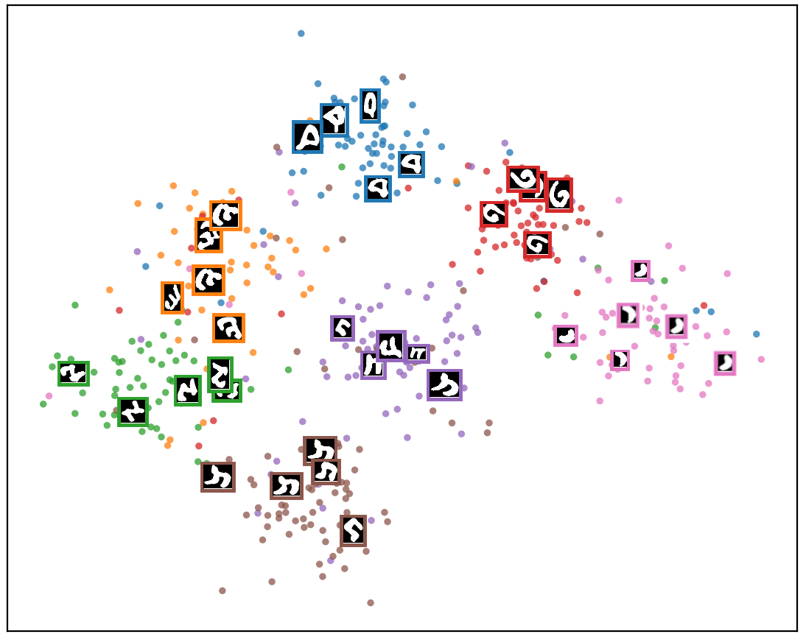
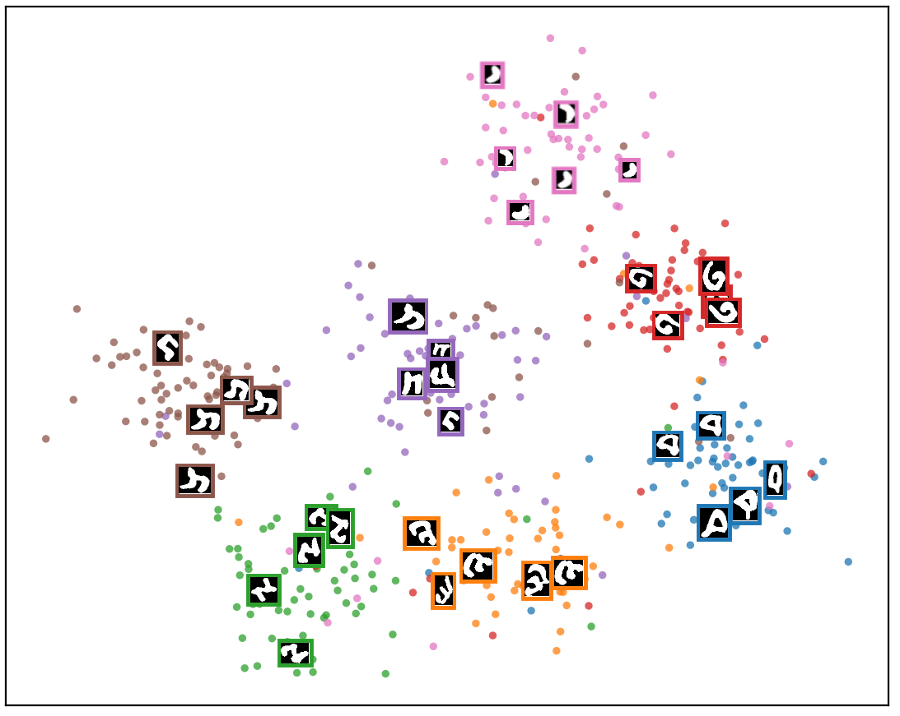
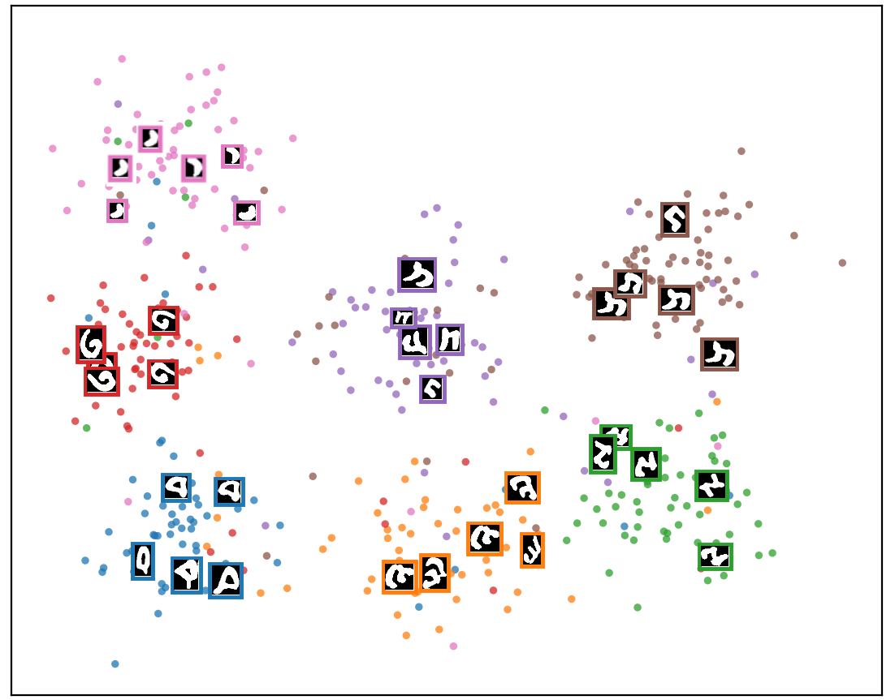
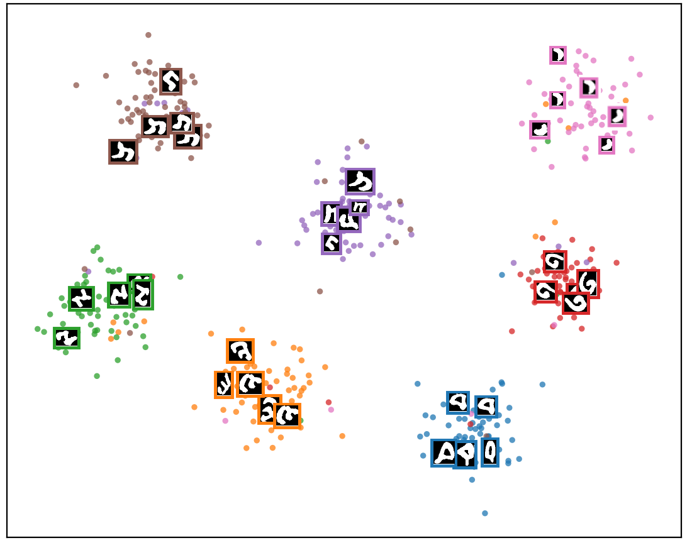
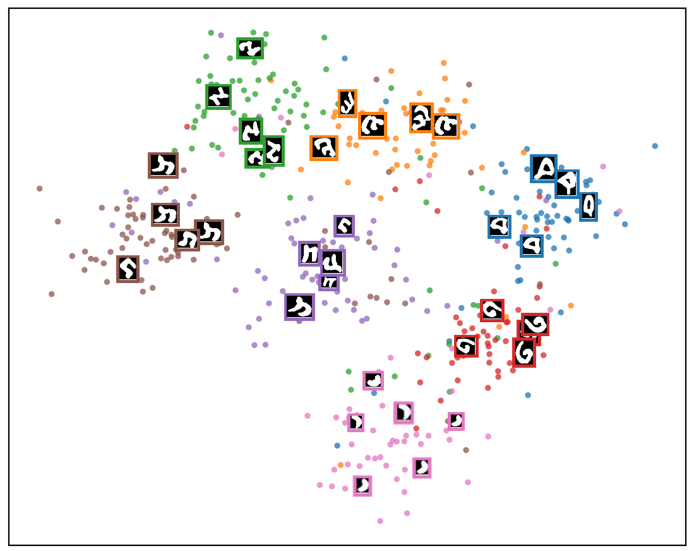
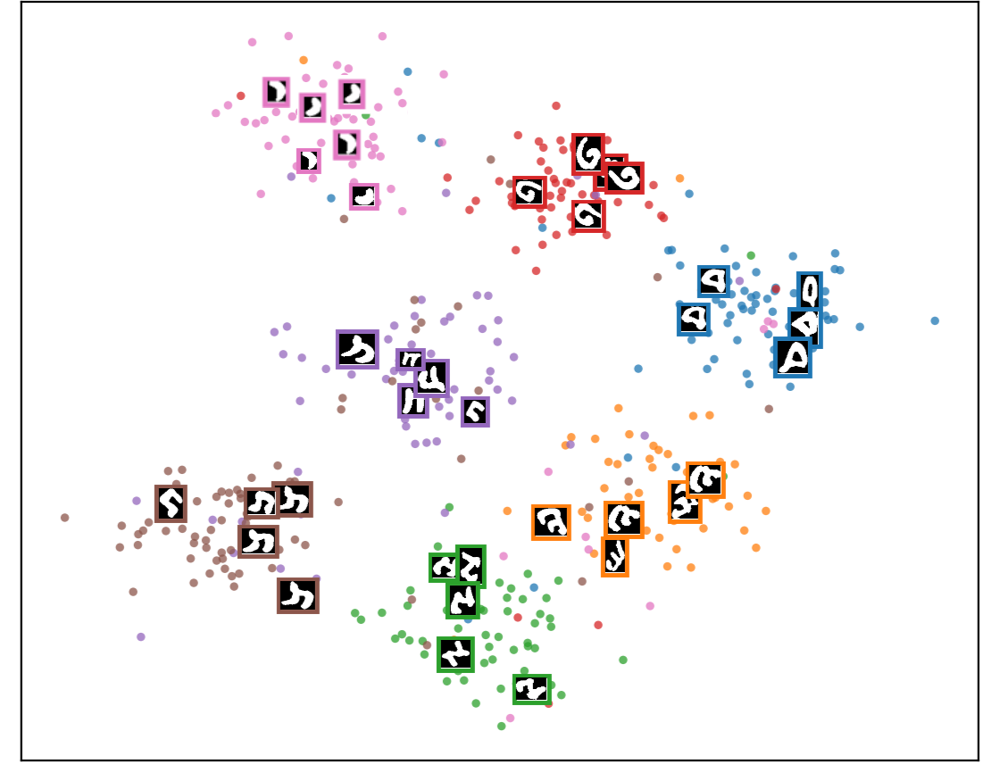
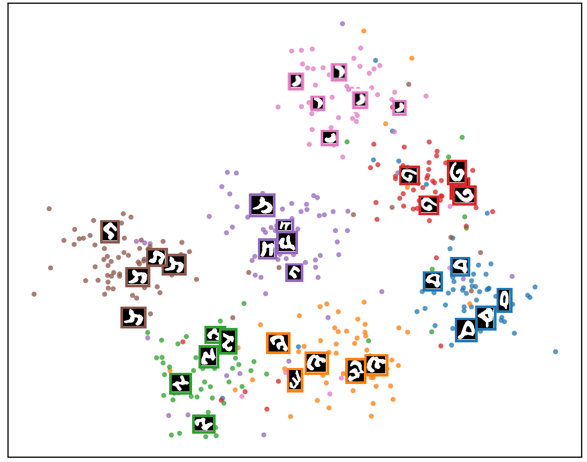

Abstract
Aramaic incantation bowls from Late Antiquity present a highly challenging visual domain characterized by severe material degradation, irregular layouts, and ambiguous letter morphology. Under such conditions, supervised learning is limited by the scarcity and instability of reliable paleographic labels. Self-supervised learning (SSL) offers an alternative to learning visual representations without explicit annotations; however, its effectiveness depends critically on the invariance assumptions encoded by data augmentations.
In this work, we systematically evaluate seven SSL frameworks on a curated dataset of segmented Aramaic incantation bowl letters. We formulate augmentation strategies as explicit hypotheses about visual identity: H1 (appearance-based transformations), H2 (structure-aware modifications), H3 (historically motivated degradations). Our results show that augmentation design substantially influences representation quality. In particular, structural and historically motivated hypotheses (H2, H3) consistently outperform appearance-only transformations (H1).
1. Introduction
Aramaic incantation bowls from Late Antiquity contain dense handwritten inscriptions arranged in circular and spiral layouts over curved clay surfaces. These artifacts exhibit extreme variability in letter morphology, irregular spacing, non-uniform backgrounds, and substantial material degradation.
The primary focus of this research is the spatial-cultural mapping of these historical artifacts. By analyzing the structural invariances and geometric consistency of the letter forms without relying on manual ground-truth, we aim to map diverse regional writing conventions and ritual practices. This approach ensures that representations are securely anchored in authentic historical and spatial variability, mapping the cultural spread of scribal traditions.
2. Dataset and Extraction Pipeline
The dataset is derived from a collection of 32 Aramaic incantation bowls dated to Late Antiquity (4th-7th centuries CE), comprising approximately 8,600 extracted letter-like units. Letter instances are extracted through an automatic multi-stage pipeline designed to operate consistently across bowls with diverse preservation conditions.

Step-by-Step Progression

1. Original Image
Raw artifact capture

2. Localization
Text-line trajectories

3. YOLOv12
Bounding box detection

4. Segmentation
SAM pixel-level masks
- Line Localization: Baseline annotations restrict the search space by defining text-line trajectories.
- YOLOv12 Detection: A domain-adapted object detection model identifies candidate letter bounding boxes.
- SAM Refinement: The Segment Anything Model (SAM) generates precise segmentation masks to isolate foreground strokes.
- Binary Letter Crops: Refined regions are cropped and converted into standardized binary patches to emphasize structural information.
3. Augmentation Hypotheses
We formalize data augmentations as explicit hypotheses regarding which visual properties can vary while preserving the underlying glyph form:
- H1 (Appearance Invariance): Assumes letter identity remains stable under photometric and surface-level changes.
- H2 (Structural Invariance): Assumes identity is preserved despite geometric and stroke-level variations.
- H3 (Historical Variability): Assumes identity persists under historical degradation (e.g., ink erosion, partial occlusion).
4. Experimental Results
Embedding Visualizations
Visualizing the clustering behaviors across different models and hypotheses.

Barlow Twins - H1

Barlow Twins - H2

Barlow Twins - H3

SwAV - H1

SwAV - H2

SwAV - H3

VICReg - H1

VICReg - H2

VICReg - H3
Classification Performance
Representations were evaluated using K-Nearest Neighbors (KNN) and Linear Probing. Structural augmentation (H2) and simulated historical degradation (H3) consistently outperformed appearance-only enhancement (H1).
| Model | H1 (Appearance) | H2 (Structural) | H3 (Historical) | |||
|---|---|---|---|---|---|---|
| KNN | Linear | KNN | Linear | KNN | Linear | |
| SimSiam | 78.12 | 74.89 | 84.39 | 84.33 | 84.97 | 83.67 |
| SwAV | 80.15 | 77.67 | 88.09 | 84.67 | 86.91 | 83.12 |
| VICReg | 81.23 | 82.42 | 86.21 | 87.32 | 87.10 | 89.05 |
| Barlow Twins | 79.06 | 81.21 | 82.11 | 84.10 | 84.10 | 85.12 |
Citation
If you find this dataset and research useful in your work, please consider citing it:
@article{atamni2026beyond,
title={Beyond Labels: Visual Invariance in Self-Supervised Learning for Aramaic Bowls},
author={Atamni, Nour and Madi, Boraq and Ammar, Islam and El-Sana, Jihad},
journal={arXiv preprint},
year={2026}
}